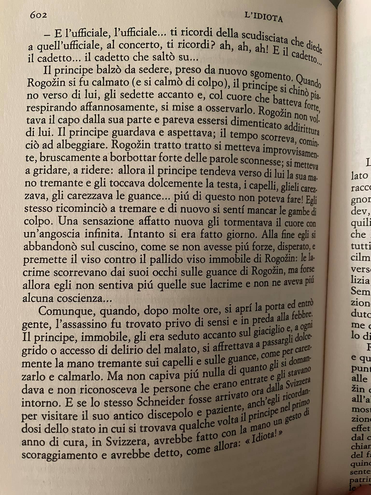

I made it! 600 pages in Italian of The Idiot. There is an idiot in all of us.
Such a tragic story, that gets you only at the end when it's almost over. I guess with all tragic stories it's like this. Starts almost as a joke, gets boring in the middle, more lively towards the end until it gets you, bam bum bum and voila, and you are left alone with more questions than answers about the mysteries of life. Which are mostly always connected with human relations. Better stick with science? 😉
